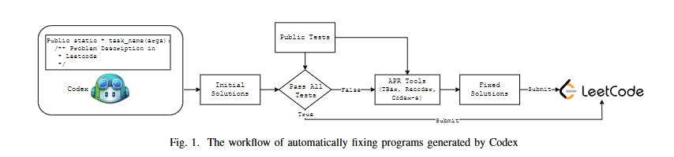
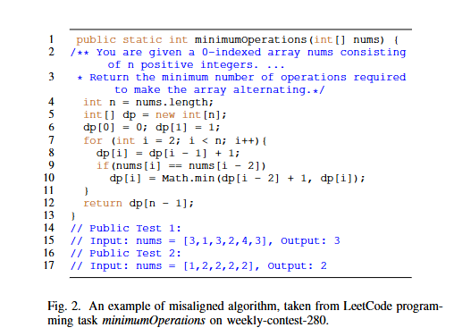
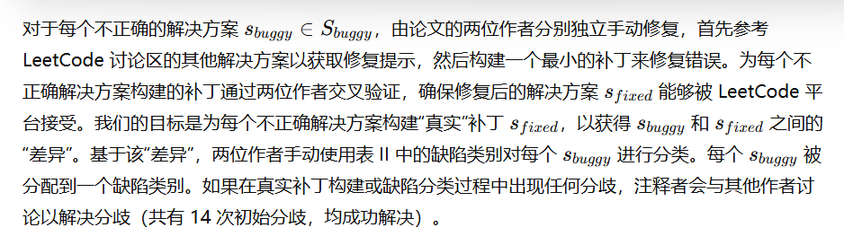
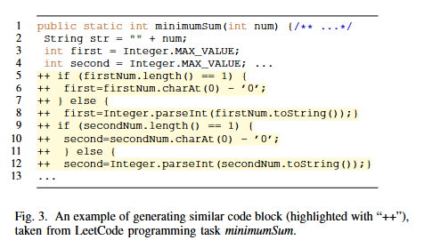
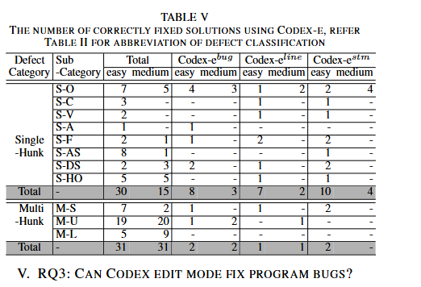
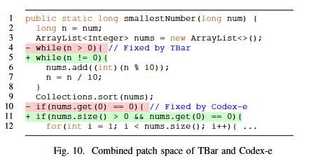

前言
导师发给我的，认真看看
简述
本研究通过将现有自动程序修复技术应用于Codex模型生成的代码，研究了大语言模型生成代码中的常见错误模式，并检验了自动程序修复工具(TBar和Recoder)及Codex编辑模式(Codex-e)在修复这些错误方面的有效性。
摘要
大型语言模型（如 Codex）在许多编程任务中展示了生成代码的能力。然而，现有模型的成功率较低，尤其是在复杂编程任务中。原因之一是语言模型缺乏对程序语义的理解，导致生成的代码不正确，甚至无法编译。在本文中，我们系统地研究了自动化程序修复（APR）技术是否可以修复由语言模型在 LeetCode 比赛中生成的不正确代码。我们的目标是探讨 APR 技术是否能够提升大型语言模型生成代码的可靠性。研究结果表明：（1）自动生成的代码与人工编写的代码存在相似的常见编程错误，表明 APR 技术可能有修复自动生成代码的潜力；（2）在统计故障定位方法提供的错误定位信息的帮助下，支持代码编辑的 Codex 新版编辑模式在修复不正确的代码时，与现有的 Java 修复工具 TBar 和 Recoder 表现相当甚至更好。通过分析这些工具生成的实验结果，我们提出了几点建议：（1）增强 APR 工具以突破修复空间的限制（例如引入更灵活的故障定位）是可取的；（2）随着大型语言模型通过更多数据训练获得更多的修复模式，未来的 APR 工具可以将重点从增加修复模式转向基于合成/语义的方法；（3）结合语言模型与 APR 来优化修复材料的选择值得进一步研究。
简介
近年来，设计基于 AI 的系统来自动解决编程任务引起了广泛关注。其中最显著的成果是基于 Transformer 的大型语言模型，它们在生成文本方面表现出色。这些基于 Transformer 的模型，如 Codex [1] 和 AlphaCode [2]，已成功地为 Python、Java 和 C 等编程任务生成代码。从技术上讲，这些技术将代码生成视为一个转换问题，将自然语言描述作为输入并将其转换为编程语言。
尽管基于 Transformer 的模型成功解决了许多编程任务，但它们的成功率仍然相对较低。在使用 pass@5 指标进行评估时，最好的 Codex 模型在 APPS 数据集 [3] 的入门级任务中达到了 24.52% 的通过率，而在竞赛级任务中仅为 3.08% [1]。最好的 AlphaCode 模型在入门级和竞赛级任务中的通过率分别为 20.36% 和 7.75% [2]。导致成功率低的主要原因是缺乏对任务描述和程序语义的深入理解。Transformer 模型将代码生成视为序列到序列的转换，将描述和代码视为令牌序列，因此无法捕获程序的深层语义特征。相比之下，生成完整程序需要对整个任务描述的理解，其中通常包含复杂的逻辑，解决编程任务依赖于深层的算法推理。尽管系统性地研究语言模型在解决编程任务时效果不佳的原因非常重要，但目前几乎没有研究对语言模型自动生成的程序中出现的缺陷进行刻画，这导致了如何进一步改进自动生成代码的理解存在空白。
自动程序修复（APR）是一个新兴领域，旨在自动修正编程错误 [4]。APR 技术以存在错误的程序和正确性规范为输入，通过对程序进行轻微修改以使其符合给定规范，生成修复后的程序。典型的修复工具通过对程序语义和给定规范进行推理来生成补丁。例如，基于语义的修复工具（如 SemFix [5]、Angelix [6]）通过符号执行生成补丁，而基于搜索的修复工具（如 GenProg [7]、TBar [8]）则在预定义的搜索空间中搜索正确的补丁。APR 在修复实际的程序错误方面展示了良好效果，但由于语义推理的复杂性以及在考虑多行修复时的搜索空间爆炸问题，其仍然主要局限于生成小的补丁（通常是单行修复）。
语言模型和 APR 技术的优劣之处启发我们思考以下问题：
自动程序修复能否改进由语言模型生成的代码？在本文中，我们将现有的 APR 技术应用于 Codex 模型生成的代码，并回答以下研究问题：
(RQ1) 自动生成代码中常见的错误有哪些？
尽管我们知道语言模型在解决编程任务时会产生许多错误的解决方案，但仍有一些未解之问：(i) 语言模型生成的错误有哪些类型；(ii) 语言模型生成的错误是否与人类编写代码中的错误相似。我们首先研究 Codex 生成代码的错误模式，并探讨这些错误是否与人类编写代码中的错误相似。(RQ2) APR 工具能有效修复 Codex 生成的代码吗？
现有的 APR 工具主要用于修复人类编写的错误。APR 工具通常通过定义转换操作符（基于搜索的 APR）或指定程序合成要素（基于语义的 APR）来生成补丁，这些操作符和要素已被证明在修复人类编写的错误方面是有效的。我们研究了 APR 工具（TBar 和 Recoder）在修复 Codex 生成代码方面的效果(RQ3) Codex 编辑模式能修复程序错误吗？
2022 年 3 月，Codex 发布了一个新版本 [9]，可以编辑完整程序中的现有内容，而不仅仅是完成部分程序。Codex 编辑模式（本文中简称为 Codex-e）要求用户提供指导修订的指令，例如“将 Java 程序转换为 JavaScript” [9]。为修复错误，用户需要提供精确清晰的指令。如何自动生成这样的指令仍然是一个未解之问。我们研究了 APR 工具的副作用（例如故障定位结果）是否可以用于指导 Codex-e，并评估了 Codex-e 在修复程序错误方面的有效性。
表 I 展示了我们研究的主要发现。我们的结果表明，现有的 APR 工具（基于模式和基于学习的 APR）仍然存在诸多限制，包括有限的补丁空间、修复位置和补丁大小——因此，提升 APR 工具以突破这些限制（例如引入更灵活的故障定位策略）是非常有必要的。具体来说，我们看到了 APR 工具和 Codex-e 之间在策划补丁元素以构建复杂补丁方面可能的协作。
本文贡献
我们对语言模型生成的错误程序的自动修复进行了系统性研究。
据我们所知，我们进行了首个评估 Codex 新发布的编辑模式作为自动修复工具有效性的研究。
我们提出了 LMDefects，一个包含 113 个 Java 编程任务的新数据集。其中，46 个任务已成功被 Codex 解决，67 个任务仍未解决。我们的数据集和脚本，包括 Codex 生成的所有初始解决方案和 APR 工具生成的所有补丁，已发布在 https://github.com/zhiyufan/apr4codex。
研究设置

研究设置
在本节中，我们介绍本研究的设置，包括总体工作流程、Codex 模型、参数、数据集、APR 工具等。所有实验均在 Ubuntu-16.04 服务器上进行，配置包括 64GB RAM、Intel Xeon E5-2660 @ 2.00GHz CPU 和 NVIDIA Titan V GPU。
a) Codex 模型
Codex [1] 是支持 GitHub Copilot [10] 的模型，能够根据自然语言提示完成程序。Codex 支持多种编程语言（例如 Python、C/C++、Java），其训练数据包含自然语言和 GitHub 上的数十亿行公开代码。在本研究中，我们使用了预训练的 Codex code-davinci-002 和 Codex-e code-davinci-edit-001 模型 [11]，这些模型均基于截至 2021 年 6 月的数据进行训练。
b) 方法和数据集
图 1 展示了本研究的整体工作流程。LeetCode 是一个在线判题平台，包含超过 2300 道从易到难的编程题目，并有活跃的论坛 [12]，用户可以在其中找到每个编程任务的正确解答（这对我们手动分析错误解答非常重要）。我们首先使用 Codex 为每个任务生成初始解答，并在公开示例测试用例上验证生成解答的正确性。对于每个未解编程任务，我们使用现有的基于测试的修复工具（使用公开测试）来修复 Codex 生成的错误解答。修复后的解答使用 (1) 公开测试和 (2) LeetCode 平台上的私有测试进行验证。为了回答我们的研究问题，我们构建了一个包含 113 个 LeetCode 编程任务的 LMDefects 数据集 [13]。每个任务由自然语言文本描述，并附有 1-3 个提供 (输入, 输出) 示例的公开测试。当提交解答到 LeetCode 时，系统会运行一组私有测试来验证解答的正确性。LeetCode 还提供每周和双周竞赛，发布新的编程任务。在本研究中，我们仅考虑易级和中级问题，因为 Codex 无法解决大多数难题 [1]（我们还排除了需要自定义数据结构的七个任务，因为 Codex 可能难以处理）。为防止所收集的数据集已被用于 Codex 的训练集，我们仅考虑 2021 年 6 月之后发布的竞赛任务（Codex 的训练数据截至该日期）。总体来说，我们从 2021 年 7 月 4 日至 2022 年 4 月 6 日，爬取了 LeetCode 的所有竞赛数据，包括 40 场周赛和 20 场双周赛。最终，LMDefects 包含 60 个易级和 53 个中级编程任务。已有多个编程任务数据集存在 [1], [2], [3], [14], [15], [16]，它们基于编程竞赛平台的竞赛（如 Codeforces）或手写的编程任务。我们未使用现有数据集的原因是 (1) Codex 已在 GitHub 上的现有编程任务解决方案中进行过训练（如 APPS、CodeContest），(2) 有些编程任务没有公开测试，这是 APR 技术的前提（如 HumanEval [1]），(3) 大多数 APR 工具仅支持 Java 程序，而 HumanEval 数据集包含的是 Python 程序。
c) 提示和参数
Codex 模型将自然语言文本和代码片段组合作为输入提示，其中自然语言文本代表编程任务的描述，代码片段是语言模型完成代码的起点。我们在零样本提示设置中评估 Codex（即提示中不包括示例输入/输出）。注意，公开测试用例也可以嵌入提示中（即 n-shot 提示），但我们将公开测试作为自然语言描述的一部分用于指导 APR 工具，而非嵌入提示中。图 2 的第 1–3 行展示了我们用于 LeetCode 编程任务的提示示例。给定此类提示，我们运行 Codex 生成 50 个候选解答，并选择概率最高的前五个解答（通过 Codex 的 best_of 参数）。选择的解答首先通过运行公开测试进行验证（例如，图 2 的第 14–17 行，我们将公开测试手动转换为 JUnit 测试），然后通过提交至 LeetCode 验证私有测试。我们重用了先前工作的设置 [1]。具体而言，我们 (1) 将 temperature 设置为 0.8（在生成 50 个候选解答时表现最佳），(2) 将停止序列设置为 “public”、”class”、”//“、”System.out.print”。我们将 “max token length” 设置为 2048。
d) APR 工具
为了评估修复工具能否修复 Codex 生成的错误解答，我们评估了两种 Java 的 APR 工具，因为 Java APR 工具已经被广泛研究，并且其中许多是开源的。在所有开源的 Java APR 工具中，我们选择了 TBar 和 Recoder，原因如下：(1) 它们代表了不同的修复方法（即 TBar 代表基于搜索和模式的 APR 工具，而 Recoder 是基于学习的方法），(2) 这些工具在 Defects4J [17] 基准测试上报告了最佳结果，生成了最多的正确修复补丁（几乎所有的 Java APR 工具都在该基准上进行了评估）。由于 TBar 和 Recoder 都是基于测试驱动的 APR 工具，我们使用程序描述中提供的公开测试用例来指导修复过程，同时使用私有测试用例验证修复后的解答。我们在默认设置下运行 TBar 和 Recoder，修复过程将在找到通过所有公开测试的补丁时停止。我们将超时设置为 15 分钟，遵循先前在编程任务自动修复中的时间限制 [18]。
由于 Codex 编辑模式（Codex-e）可以通过生成程序编辑来修改现有代码，我们研究了 Codex-e 是否可以作为一个 APR 工具，并将其与 TBar 和 Recoder 进行比较。****

研究问题 1：自动生成代码中常见的错误是什么
在应用 APR 技术修复自动生成的解决方案之前，我们通过分析 Codex 生成的解决方案中的典型错误来评估其可行性。给定 LMDefects 中的一个编程任务让 Codex 解决，我们首先在公开测试上运行五个自动生成的解决方案，并将它们提交到 LeetCode 在线评测平台，以使用私有测试进行验证。如果 Codex 生成的一个自动解决方案 sss 未能通过所有公开和私有测试，则视为不正确的解决方案。如果某个编程任务的所有五个自动生成解决方案都是不正确的，则认为该任务未被解决。总体而言，Codex 可以解决 46 个编程任务。我们对其余 67 个未解决任务中的 335 个不正确解决方案 SbuggyS_{buggy}Sbuggy 中导致编译错误或测试失败的错误进行了研究。

我们基于 Codeflaws【14】中的类别来衍生缺陷分类（Codeflaws 是一个包含编程竞赛参与者错误提交的基准）。表 II 展示了详细分类及其定义，同时也列出了每个类别中包含的错误解决方案数量（包括“简单”和“中等”）。每个缺陷类别的示例代码可在补充材料中找到。自动生成代码的缺陷分类与 Codeflaws 中的缺陷分类有所重叠。具体而言，在 Codeflaws 和我们的数据集中，都包含需要多块或单块修复的缺陷。此外，对于单块修复，两个数据集都共享类似的变异操作（例如操作符变异和变量变异）。这表明 Codex 生成了与人类参与者相似的编程错误。我们认为这是预料之中的，因为 Codex 是在大量可能包含错误的人工编写程序上训练的。
除了上述单块和多块缺陷外，Codex 生成的解决方案中还普遍存在语法错误和算法相关的错误。我们对这些解决方案进行了手动分析，以研究这些错误背后的根本原因。
语法错误
语法错误。通过手动分析，我们发现自动生成的程序引发编译错误的原因通常是：(1) 代码不完整，或 (2) 调用了未定义的变量/函数/类。为了减少 Codex 生成不完整代码的可能性，我们选择了 Codex 允许的最大令牌长度（即 2048 个令牌）来生成 50 个候选解决方案。尽管为代码生成提供了最大长度限制，Codex 仍然会生成不完整代码，其平均令牌长度为 628。因此，研究应用代码补全技术来修复 Codex 生成的不完整代码的可行性具有意义。同时，对于包含未定义函数的程序，需要合成函数体以解决编译错误。未来的研究可以探索使用程序合成技术来处理未定义函数，或者逐个函数调用 Codex 以合成函数体。
除了这些编译错误之外，我们还观察到 Codex 倾向于生成因缺少或多余括号而无法编译的程序（共有 23 个此类案例）。由于括号不匹配可以通过正则表达式匹配机制轻松修复，我们手动修复了这些错误，并进一步将其缺陷分类归入表 II 中的缺陷类别
算法不匹配
在所有不正确的解决方案中，有 191 个使用了错误的算法来解决给定的任务，其中包括超时错误（TLE，Time Limit Exceeded）。生成的解决方案未能满足用户意图的问题被称为不匹配问题（misalignment problem）【1】。所有被分类为“算法不匹配”的缺陷都存在此类不匹配问题。****
自动生成代码中的负面症状。
自动生成的补丁已知会表现出某些反模式。受此启发，我们分析了 Codex 生成的代码中是否存在负面症状，这些症状可能表明代码不正确。我们通过研究“算法不匹配”和“语法错误”类别，来判断这些代码中是否存在不太可能是正确程序的负面症状。
名称指示错误算法：在“算法不匹配”类别中，Codex 倾向于生成包含特定变量名称的解决方案，这些名称指向了使用的基础算法/数据结构是错误的。图 2 显示了一个使用“dp”变量的示例，其中使用的算法（即“dp”代表动态规划）不正确。我们认为 Codex 因为被 GitHub 上名为“minimumOperations”但用于不同编程任务的其他程序误导，所以选择了动态规划算法。同样地，我们观察到其他变量名，例如“pq”（优先队列）和“q”（队列），也指向了错误的数据结构的使用。
相似代码块：我们注意到，当 Codex 难以为给定提示生成高质量解决方案时，它往往会反复生成相似的代码块（代码克隆，变量名、语句使用和控制结构上有细微差异）。图 3 显示了一个包含相似代码块的解决方案（仅变量名不同），具体位于第 5–8 行和第 9–12 行。

- 无关的辅助函数：尽管我们在设置中为 Codex 添加了停止序列（以在生成代码到达函数末尾时终止生成），我们仍观察到 Codex 经常生成与给定任务无关的冗余辅助函数。
RQ2: APR工具在修复Codex生成的代码中的有效性
给定Codex模型生成的298个可编译的错误解决方案，我们运行TBar和Recoder来评估它们生成修补程序的能力。在修补程序验证阶段，自动生成的修补程序被分类如下：
- 合理修补程序：合理修补程序是指能够使错误解决方案通过给定公共测试的修补程序。
- 正确修补程序：正确修补程序是指能够使错误解决方案通过公共测试和私人测试，并被LeetCode接受的修补程序。
表III显示了TBar和Recoder分别生成的修补程序数量以及成功修复的编程任务数量。尽管TBar在易级和中级任务中生成了16个和22个合理修补程序，但它只生成了6个易级和3个中级正确修补程序。与TBar相比，Recoder生成的合理修补程序较少（易级和中级分别为16个和20个），但生成了更多的正确修补程序（易级和中级分别为6个和5个）。表III中的“正确修复任务”列显示了TBar和Recoder成功修复的编程任务数量。需要注意的是，每个编程任务对应五个选定的错误解决方案。如果其中任何一个解决方案被正确修复（并被LeetCode接受），我们认为该任务已解决。总体而言，Recoder修复了8个编程任务，而TBar仅修复了6个任务。结合这两种工具，APR工具帮助Codex解决了4个更多的易级任务和5个更多的中级任务。
我们进一步分析了这两个APR工具修复的缺陷类型。表IV显示了每个缺陷类别中可以正确修复的解决方案数量，其中“ TBar”和“Recoder”列分别显示了相应工具生成的修补程序数量。对于每个类别，修复工具可能不会通过最小化地修改程序来修复错误（即，修复工具可能使用与“缺陷子类别”列中所示的最小修复不同的操作符来修复错误）。结果表明，现有的APR工具在生成复杂修补程序方面仍然有限，特别是在需要编辑多行代码的修复中。
图4展示了Recoder优于TBar的两个例子。在第一个例子中，尽管TBar具有“变异字面表达式”模式，但由于修补空间有限，它无法找到正确的字面量进行替换，因此失败。第二个例子中，TBar未能生成正确的修补程序，因为它没有“插入语句”模式。
对于需要多行修复的任务，TBar 和 Recoder 都未能生成任何正确的修补程序。原因之一是，TBar 和 Recoder 中广泛采用的统计故障定位技术侧重于单独识别每一行故障，而没有考虑程序中可疑行之间的依赖关系。例如，要修复图 5 中的错误…
RQ3: Codex编辑模式能修复程序错误吗
Codex编辑模式接受程序和自然语言指令作为输入，并根据指令输出编辑后的程序。由于Codex-e可以编辑程序的内容，一个自然的问题是：“Codex-e能否通过适当的指令修复错误的程序？”为此，我们设计了三种策略来构建Codex-e的编辑指令。
Codex-ebug: 我们告诉Codex-e给定程序中存在一个错误，并要求Codex-e修复它。指令简单地给出为“Fix bug in the program”（修复程序中的错误）。
Codex-eline: 我们遵循现有的自动化程序修复技术，使用统计故障定位技术（Ochiai）[21][22]对生成的错误解决方案进行分析，以获取一系列候选修复行号。这些候选行号随后作为修复提示提供给Codex-e。指令为“Fix line N”（修复第N行）。
Codex-estm: 考虑到像Codex这样的语言模型是用普通自然语言训练的，我们进一步研究了如果直接使用可疑语句而不是可疑行号作为指令，Codex-e会如何响应。我们使用程序文本中的语句，例如可疑行的s1，并将指令制定为“Fix s1”（修复s1）。
对于每个错误的解决方案（我们排除了产生语法错误的解决方案，如第四节所述），我们选择了十个最可疑的语句，并要求Codex-e为每个语句生成五个可能的编辑（即Codex-e尝试在50次尝试内修复一个错误的解决方案）。与常规Codex模式中的初始解决方案生成类似，我们将温度设置为0.8，以增加找到正确编辑的可能性。
表V展示了三种策略的结果，其中Codex-ebug、Codex-eline和Codex-estm列显示了使用相应编辑指令修复的正确补丁数量。在使用“Fix bug in the program”作为指令时，Codex-ebug仅了解给定程序中存在错误，但没有任何关于故障位置的信息。令人惊讶的是，尽管指导有限，Codex-ebug成功地生成了15个正确的补丁，其中四个涉及多行修改（具体示例请参见补充材料）。相比之下，当提供错误行号作为指令时，Codex-eline修复了9个需要单行修改的解决方案，并修复了2个需要多行修改的解决方案。与Codex-ebug和Codex-eline相比，Codex-estm取得了最佳效果，成功修复了16个错误的解决方案。我们认为Codex-estm的有效性归因于它使用了程序文本（例如，“i -= 2;”），这些文本可能帮助像Codex这样的语言模型匹配相关语句。

此外，我们手动分析了Codex-e生成的补丁，发现Codex-e能够在灵活的位置生成补丁。之前的APR研究[8]，[23]，[24]，[25]已表明，完美的故障定位结果与否存在显著的性能差距。尽管现有的APR工具严格尝试在给定的故障行号上生成补丁，而忽略了在相关上下文中修复错误的可能性，Codex-e没有这种限制。在Codex-estm成功修复的16个解决方案中，有8个（50%）是通过编辑给定指令中提供的语句之外的代码来修复的。图6展示了其中一个例子。提供给Codex-estm的指令是“Fix ‘for(int i =0; i<result.length; i++){‘”，Codex-estm通过将一个if-then子句移出循环体并修改if条件来修复这个问题。与传统的APR工具相比，使用灵活的故障定位是Codex-e生成更多正确补丁的重要特性。
A. TBar、Recoder 和 Codex-estm 的比较。
省流：Codex获胜
为了分析每个工具修复的缺陷类型以及每种方法有效性的原因，我们对比了TBar、Recoder和Codex-estm生成的修补程序。由于我们的实验表明Codex-estm在所有Codex-e策略中表现最佳，因此我们选择Codex-estm与其他APR工具进行比较。图7展示了一个维恩图，以更清晰地说明这三种工具生成的共同修补程序和独特修补程序的集合。我们将TBar生成的修补程序集合表示为TBar，将Recoder生成的修补程序表示为Recoder，将Codex-estm生成的修补程序表示为Codex-estm。如图7所示，TBar生成的修补程序是Codex-estm ∪ Recoder的一个子集。实际上，TBar生成的修补程序几乎被Recoder的集合所包含。这是由于基于模式的方法在搜索空间上的限制（在第IV节中讨论）。如果比较Codex-estm和Recoder，两者共享8个共同修补程序，而Codex-estm有6个独特修补程序，Recoder有2个独特修补程序。我们认为Codex-estm优于Recoder，因为：(1) Codex-estm可以在灵活的位置生成复杂的修补程序（例如，图6）；(2) Codex-estm在比Recoder更大的数据集上进行了训练（Recoder使用了82868个人工修补程序进行训练），这帮助Codex-estm学习到更多的修复模式（例如，图8中Codex-estm使用了lambda表达式）。
尽管Recoder训练的数据较少，它仍然生成了两个独特的修补程序。图9展示了Recoder唯一修复的一个解决方案。我们认为Recoder能够生成这个正确的修补程序，是因为其语法引导解码器能够指导它复制第6行的语句并将其插入到图9中的第3行（这触发了Recoder的复制操作，即复制set.remove(i)语句所在的AST子树）。在另一个由Recoder唯一修复的例子（S-O-6）中，Recoder正确地将条件语句if (a && b)替换为if (a)（这也是一种AST编辑操作）。这些例子表明，将AST信息编码到深度学习模型中可能有助于生成正确的修补程序。在未来，研究人员可以考虑将AST信息融入到像Codex-e和AlphaCode这样的大型语言模型中。
B. 合并不同工具的修补空间
合并Codex-e和APR的修补空间
我们进一步研究APR和Codex-e生成的修补空间是否互为补充，方法是评估不同工具生成的修补成分。修补成分被定义为构建相应修补程序时使用的操作符/操作数（例如变量、字面量、操作符等）。如果APR和Codex-e生成的修补成分互补，它们的组合将更有可能生成正确的修补程序。为此，对于每个错误的解决方案，我们首先通过参考在第三节构建的“地面真实”修补程序，获得所需的修补成分Icorrect（即，正确的修补程序是使用Icorrect中的成分构建的）。然后，我们研究以下内容；我们不考虑Recoder+Codex或Recoder+Codex-e，因为Recoder和Codex/Codex-e都是基于学习的工具。
- 单个工具（TBar/Codex-e）能否为每个错误的解决方案生成所有所需的修补成分？
- 将TBar和Codex-e结合起来（顺序运行TBar和Codex-e）是否能生成所有所需的修补成分？
表VI展示了每种APR技术的修补空间覆盖的所需修补成分的数量。 “TBar+Codex-e”表示TBar和Codex-e的联合修补空间。我们的结果显示，结合Codex-e和TBar能够成功生成9个错误解决方案的所需修补成分，其中2个无法通过TBar和Codex-e单独生成。
图10展示了一个错误解决方案，可以通过将n>0更改为n!=0并插入一个边界检查nums.size()>0来修复。对于这个错误的解决方案，我们实验中的任何APR工具都未能生成正确的修复。然而，TBar和Codex-e可以分别生成所需的两个修补成分。具体来说，TBar通过将错误操作符从“>”更改为“!=”修复了第一个错误，使得解决方案通过了公共测试。当我们将这个部分修复的解决方案提交到LeetCode时，程序仍然因为抛出IndexOutOfBoundsException而失败。通过将错误信息编码到编辑指令中（“Fix IndexOutOfBoundsException”），Codex-e成功修复了该错误，方法是添加检查nums.size()>0。

将APR与Codex的多解方案结合
Codex 生成了一组程序候选解 —— 每个候选解在理解问题描述时可能会有轻微的差异，因此代表着略微不同的代码。我们研究了结合这些候选解的修补成分（“TBar+Codex” 设置）的可行性。表 VI 显示，“TBar+Codex” 是在评估的组合中最有效的，它为 12 个错误解生成了所有必需的修补成分。图 11 显示了一个示例错误解，它需要两个修补成分。TBar 生成了第一个修补成分（即移除第 7 至 9 行的 if 分支），但第二个修补成分（添加一个 for 循环来计算数组 freq 的绝对值之和）在任何 APR 技术的修补空间中都没有出现（包括 Codex-e）。这主要是因为生成如此大且未见过的代码片段并不是大多数现有 APR 工具所支持的，并且 Codex-e 在指令中也没有相关提示。然而，Codex 产生了许多候选解，这些解可以用来丰富修补空间。通过借用其他候选解的代码并修改变量名，我们成功修复了这个错误解。
与仅使用 APR 技术修复错误解相比，Codex-e 和 Codex 的多个解能够提供必要的修补成分，以构造正确的修复。
含义与讨论
我们的研究揭示了几项对语言模型和程序修复研究的重要启示和建议。
A. 语言模型缺陷的开放数据集
为了推动像Codex这样的语言模型的代码生成能力，我们认为系统地研究语言模型所犯的错误是一个重要的初步步骤。拥有一个社区驱动的数据集，并对数据集中的缺陷进行更多分析，将有助于未来改进自动生成的程序。我们提议LMDefects数据集作为这一方向的倡议。
B. 自动生成Codex程序的负面症状
我们已识别出自动生成的Codex程序中存在几种负面症状，包括：
(1) 变量名暗示错误的算法，
(2) 重复生成相似的代码块，
(3) 不相关的辅助函数。
此外，我们还观察到，即使手动修复了所有自动生成的Codex程序中的括号不匹配语法错误，这些程序仍然是错误的，因为它们未能通过LeetCode的保留测试。
C. 自动生成代码中函数名的使用
根据我们对生成解决方案的手动分析，Codex似乎在解决编程任务时过于依赖函数名（例如，图2中的minimumOperations）。实际上，最近的研究也观察到Codex在生成解决方案时倾向于根据函数名进行生成【26】。与长篇提示（包括函数签名和问题描述）相比，函数名更简洁且在GitHub中更容易搜索。然而，当编程任务需要定制算法时，这种策略就会失败。依赖函数名来搜索相关代码会将Codex的生成能力限制为一个简单的API搜索引擎，只返回给定API的实现。未来为代码生成设计的语言模型应更多关注从问题描述中提炼有用信息，减少对函数名的依赖。
D. 基于模式的APR与基于学习的APR
第四节展示了Recoder比TBar生成更多正确修复的原因。原因在于基于模式的APR需要（1）额外的修复模式，或（2）更大的修复成分搜索空间（例如，特定的字面量）。图4展示了一个可以通过Recoder唯一修复的例子，通过在第12行添加语句steps++，而TBar不支持此操作。然而，图7展示了TBar也能唯一修复两个Recoder无法修复的解决方案。例如，尽管Recoder已经使用操作符变换修复了其他错误，但它未能修复错误解决方案（S-O-4），该方案需要将关系运算符从“<”改为“!=”，而TBar成功了。这表明，基于学习的APR不能保证所学模式在修复所有程序时都能正确应用。未来APR研究在设计修复操作符时可以关注（1）将领域特定知识纳入学习新模式，以及（2）提高所学模式的泛化能力。
E. APR研究如何帮助语言模型？
尽管我们的研究表明现有的APR技术只能帮助修复Codex自动生成程序中的一小部分错误，但我们认为APR研究可以在以下几个方面有助于未来的语言模型研究：
基于测试的修复框架
我们的研究采用了基于测试的修复框架[27], [28]，该框架依赖于测试用例的质量，研究结果表明，LeetCode中的公共测试（图2中的输入/输出示例）可以引导APR工具为Codex程序生成正确的修复。具体而言，我们的研究表明可以通过以下方式应用基于测试的修复：
- 修复Codex原始模式生成的错误解决方案；
- 通过使用故障定位信息引导Codex-e生成更多正确的修复。
目前，语言模型只使用自然语言指令从头开始生成一个新程序。未来的代码生成可以首先生成错误程序的编辑，并通过迭代的基于测试的方式进一步优化。
正确程序的优先级排序
我们的研究表明，自动生成的Codex程序中存在一些负面症状。由于这些症状的存在，自动生成的程序很难成为正确的程序，因此，未来语言模型的设计者可以在语言模型中集成一个过滤功能，自动排除具有负面症状的程序。另一种可行的解决方案是将这些症状编码到排序函数中，引导语言模型选择更好的程序。这两个方向表明，可以将APR研究中的最新进展，如修补正确性评估[29], [30]和修补优先级排序[31], [32]，应用于引导像Codex这样的语言模型生成更好的程序。
获取修补成分
我们的研究（第V-B节）表明，我们可以有效地将TBar和Codex/Codex-e的修补空间结合起来，获取生成复杂修复所需的修补成分。未来的研究可以致力于自动搜索和合并修补成分，以生成更复杂的程序/修补。具体来说，我们可以利用基于语义的修复方法，从候选解决方案中提取具有相同语义意义的代码片段作为修补成分，并将这些成分与错误解决方案进一步拼接，最终生成符合语义规范的正确解决方案。
F. 对Codex-e的控制与灵活性之间的平衡
第V节表明，Codex-e生成的修补程序在很大程度上依赖于提供的编辑指令类型。与Codex-ebug和Codex-estm相比，Codex-eline生成的正确修复数量最少。尽管Codex-ebug和Codex-estm修复的解决方案数量相近（分别为15个和16个错误），但修复的缺陷类别有所不同。Codex-ebug修复了两个多块（multi-hunk）错误，而Codex-estm修复了三个单块（single-hunk）错误。由于像“Fix bug in the program”这样的编辑指令没有指定特定的编辑目标，Codex-e可能会基于其学到的知识，在整个程序中搜索需要编辑的语句。这种灵活性促进了大范围修补程序的生成，但在修复需要单行修复的错误时可能会失去精确性。相比之下，Codex-estm提供了代码上下文（由故障定位给出），这引导了编辑方向，集中修正最相关的代码上下文。从另一个角度来看，我们还可以将Codex-estm和Codex-eline视为基于测试的APR工具，它们基于测试用例给出的故障定位修复错误，而Codex-ebug则是生成没有指导的编辑。将可疑代码上下文编码到指令中提供了更多的控制，并且在修复简单错误时表现更好，而提供一般性的指令则由于增加了灵活性，可能会找到更多复杂和较大的修复。未来值得研究如何构建编辑指令，引导Codex-e生成更多正确的修复。
G. 语言模型的新用途
来自大型语言模型（LLMs）自动生成的代码正在逐渐受到关注。通过更多的开源代码库作为训练数据，自动生成的代码质量可以得到提升。然而，LLMs生成的代码仍然可能不可信。我们的研究可以帮助自动改进这些自动生成的代码。
基于我们的启示，我们建议为未来的软件开发提供一个实际的使用案例。我们建议使用测试驱动开发（TDD）工作流，在此工作流中，开发人员用自然语言和少量的测试用例指定需求。LLMs负责生成程序，程序可能是正确的，也可能是错误的，而语义程序修复方法[5]，[6]可以通过使用给定的测试用例对自动生成的代码进行微调，以增加其正确性的可能性。例如，如果开发人员想编写一个专门的库函数，LLMs可以根据初始方法签名和自然语言描述生成该函数的代码，而APR可以通过测试用例验证并修复生成函数中的小错误。这为将来更多代码由自动化工具（如Codex）生成做好准备。